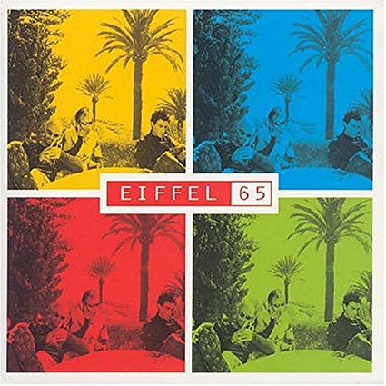

Eiffel 65

Release Date: May 17, 2004
- Viaggia Insieme A Me (Album Mix)
- Quelli Che Non Hanno Eta (Gabry Ponte Power Cut)
- Una Notte E Forse Mai Piu (Album Mix)
- Tu Credi (Gabry Ponte FM Cut)
- Voglia Di Dance All Night (Album Mix)
- La Mia Lente (Album Mix)
- Non E'Per Sempre (Album Cut)
- Like A Rolling Stone (Album Mix)
- Figli Di Pitagora (Album Mix)
- Sopra Un Palco Per Tutto Il Mondo (Album Mix)
- Oggi (Album Mix)
- Coa Restera (In A Song) (Gabry Ponte FM Cut)
- Io E La Mia Stanza (Album Mix)